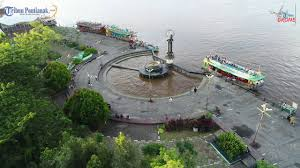
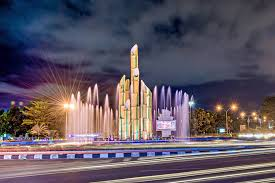
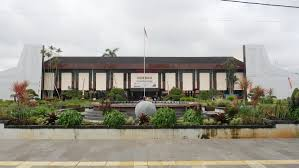

Taman Khatulistiwa
Taman Khatulistiwa yang berada di Desa Siantan, Pontianak Utara, merupakan monumen garis khatulistiwa yang menandai titik nol lintang bumi. Di tempat ini, terdapat museum yang menyimpan koleksi sejarah. Selain itu, ada pula taman dengan gazebo dan beragam wahana permainan untuk anak. Hal tersebut membuat Taman Khatulistiwa bisa jadi salah satu destinasi pas untuk berlibur bersama keluarga.

Istana Kadriah
Istana yang dibangun pada 1771 ini menyimpan berbagai koleksi sejarah dan budaya. Ada pusaka, pakaian adat, keris, hingga foto-foto para sultan. Dengan berkunjung ke istana ini, kamu bisa belajar mengenai sejarah Pontianak sembari melihat keindahan Sungai Kapuas karena letaknya yang berdekatan. Lokasi Istana Kadriah ada di Jalan Tj. Raya 1, Dalam Bugis, Kecamatan Pontianak TImur, Kota Pontianak. Jam operasionalnya setiap hari pukul 10.00-17.00 WIB.

Alun-alun Kapuas
Taman yang berada di pinggir Sungai Kapuas ini memiliki beragam daya tarik. Salah satunya air mancur indah yang terlihat berwarna-warni pada malam hari. Selain itu, ada pula Tugu Khatulistiwa yang jadi kebanggan masyarakat Kalimantan Barat. Pengunjung yang datang ke taman ini dapat melihat kapal-kapal yang melintasi Sungai Kapuas. Bahkan, bisa pula menikmati beragam kuliner Pontianak yang dijajakan di sekitarnya

Taman Digulis
Taman Tugu Digulis Untan di Jalan Ayani 1 Pontianak Tenggara, Kalimantan Barat, merupakan salah satu destinasi taman yang sering dikunjungi wisatawan. Di pagi hari banyak juga warga setempat ataupun pendatang yang berjalan-jalan kaki atau jogging sambil menikmati taman yang bersih dan cantik yang tidak jauh dari Universitas Tanjungpura, Pontianak.

Rumah Radank
Rumah ini merupakan rumah adat masyarakat Dayak yang kini mulai jarang terlihat. Terlepas dari itu, Rumah Radakng dinobatkan sebagai rumah adat terpanjang di Indonesia oleh MURI. Panjang rumah adat ini mencapai 138 meter dengan tinggi 7 meter.

Masjid Mujahidin
Bagimu yang muslim, bisa mampir ke Masjid Raya Mujahidin yang merupakan masjid terbesar di Pontianak. Kamu bisa beribadah sembari menikmati kemegahan arsitektur masjid ini. Menariknya, masjid ini punya menara setinggi 63 meter yang jadi lambang kemerdekaan Indonesia. Alamat Masjid Raya Mujahidin di Jalan Jendral Ahmad Yani, Akcaya, Kecamatan Pontianak Selatan, Kota Pontianak.

Waterfront
Tempat ini menawarkan pemandangan indah kota serta sungai lengkap dengan berbagai fasilitas hiburan hingga kuliner. Kamu bisa jalan-jalan sambil berfoto di spot instagramable yang disediakan. Setelah capek berkeliling, silakan mampir di restoran maupun warung kaki lima yang ada di sana, cicipi berbagai kuliner khas Pontianak yang lezat untuk melengkapi wisatamu.

Museum Provinsi Kalimantan Barat
Museum yang berada di Kota Pontianak ini menyimpan berbagai peninggalan sejarah yang bernilai. Di museum ini ada peninggalan dari berbagai jenis suku yang tinggal di Kalimantan Barat, tepatnya Suku Dayak, Melayu, hingga Tionghoa.